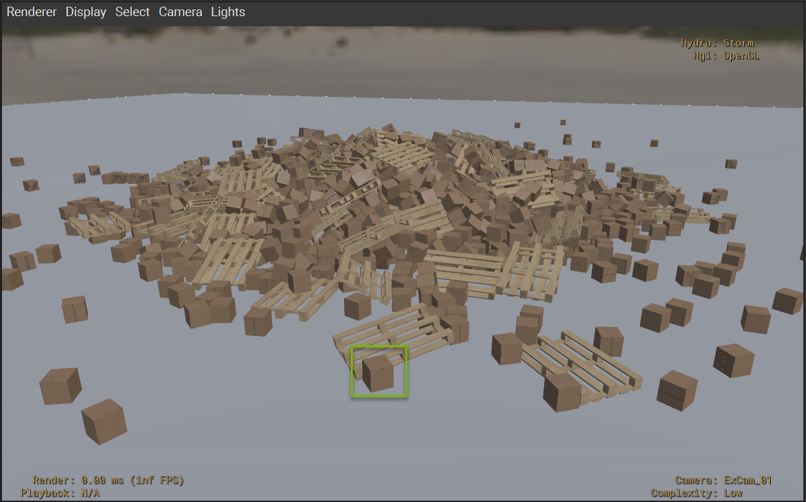
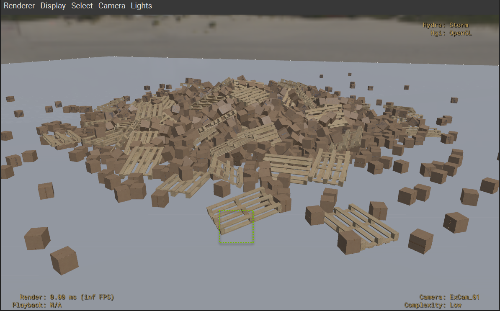
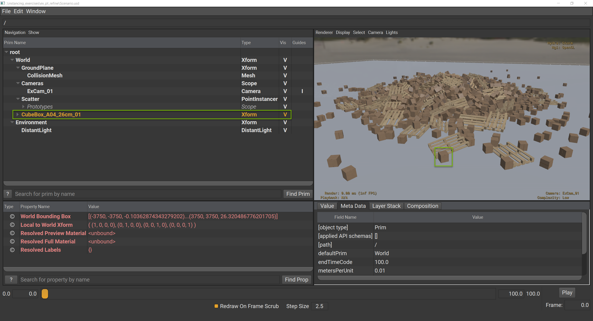
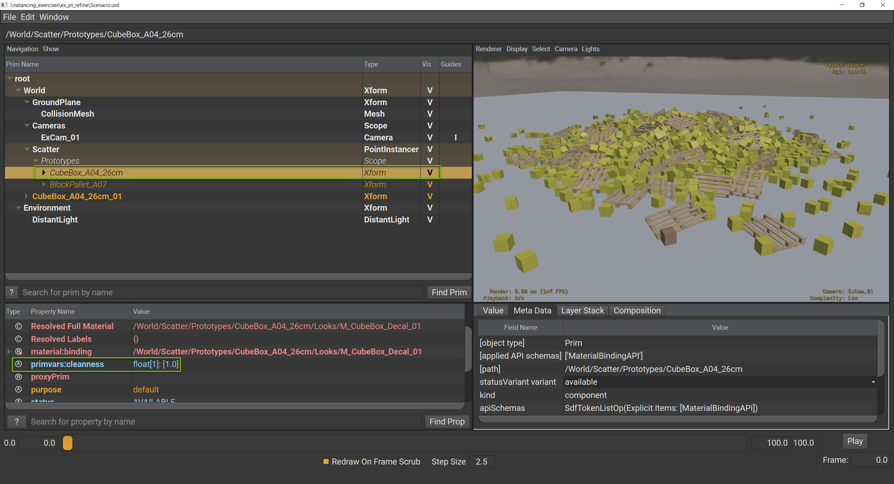
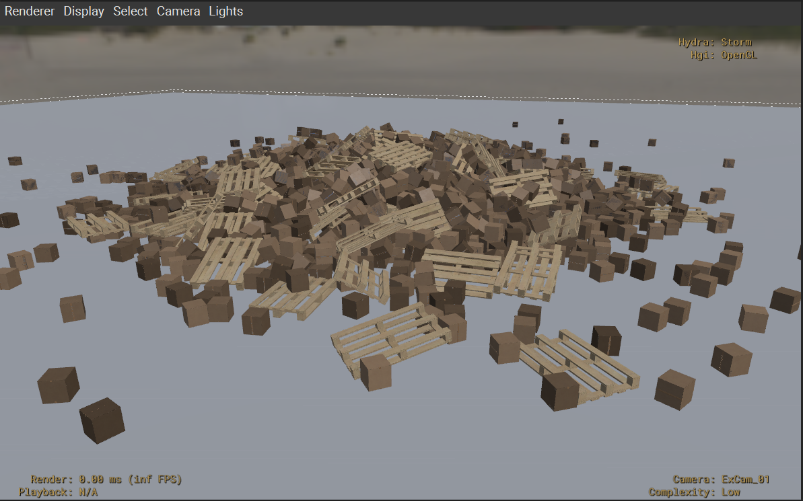

Refining Point Instances#
Refinement Using Primvars#
Primvars using vertex interpolation will be applied per instance. Like scenegraph instancing, you can introduce a lot of diversity in your point instances by using prototypes that read primvars.
In the case of our packing peanut example, our packing peanut asset’s material network may read from a primvars:peanut_color primvar. Authoring this primvar on our PointInstancer could enable us to make each peanut a different color if we wanted to.
#usda 1.0
(
defaultPrim = "World"
metersPerUnit = 0.01
upAxis = "Z"
)
over "PackingPeanuts"
{
color3f[] primvars:peanut_color = [...](
interpolation = "vertex"
)
}
Introducing New Prototypes#
If you want to introduce more variety into a PointInstancer with additional prototypes, point instancing’s explicit prototype pattern requires a bit more work than scenegraph instancing. You will need to:
Define an additional prim hierarchy for the new prototype.
Add the new prototype to the
prototypesrelationship.Update
protoIndicesto specify which instances should use the new prototype.
Refinement Using Visibility and Deactivation#
At any point downstream, you can refine your PointInstancer by pruning or hiding instances using inactiveIds metadata and invisibleIds attribute respectively.
Deactivating packing peanuts that fell out of the box after the physics simulation process.#
A good rule of thumb is that if you need to animate an instance on and off over time, you should use invisibleIds, otherwise, use inactiveIds. A nice feature of inactiveIds is that it can be list-edited so you can sparsely add and remove ids.
Refinement Using Promotion#
Promotion in this case is what we call turning a point instance into a full-fledged subgraph on the stage so you can override it more intuitively.
Promoting a point instance.#
In this example, maybe we’re creating a commercial and we want to turn a packing peanut into an animated character. We can use inactiveIds to deactivate the point instance that will be replaced by the character and then reference the character into the same position. Now we can animate and override the referenced character as we see fit.
Exercise: Refining Point Instances#
Introduction#
In this exercise, you will learn three key techniques for refining point instances: deactivating instances to prune them, promoting instances to fully editable assets, and using primvars to add shading diversity. You’ll explore how these techniques allow you to introduce variety and control into your PointInstancer while maintaining performance benefits, giving you the flexibility to customize individual instances when needed.
Exploring the Point Instancer Scenario#
Run in the terminal:
Windows:
.\scripts\usdview.bat .\instancing\ex_pt_refine\Scenario.usd --camera ExCam_01
Linux:
./scripts/usdview.sh ./instancing/ex_pt_refine/Scenario.usd --camera ExCam_01
Tip
Click Camera > Select Camera > ExCam_01 if you ever lose your place in the scene or want to get back to this camera position.
In the horizontal center of the Viewport, there is a box just in front of a pallet. This is the point that we want to prune. We know ahead of time that this is index 1228 in our PointInstancer arrays.

Deactivating Point Instances#
Click Window > Interpreter to open the Interpreter window.
Run the following code in the Interpreter window:
1stage = usdviewApi.stage
2prim = stage.GetPrimAtPath("/World/Scatter")
3pi = UsdGeom.PointInstancer(prim)
4pi.DeactivateId(1228)

You should notice that the box we called out disappeared. This code deactivates the given ID from the PointInstancer. This authors metadata on the PointInstancer that indicates that the given point should be pruned entirely.
Promoting Point Instances#
What if we didn’t want to prune this point, but wanted to promote it instead into a fully editable asset. Promotion starts with pruning, but then you replace the pruned point with the full asset. Let’s run some code to reference a new asset and place it in the same place as our pruned point. We will continue with point 1228 for this part.
Run the following code in the Interpreter window:
1from pathlib import Path
2box = stage.DefinePrim("/World/CubeBox_A04_26cm_01")
3stage_path = Path(stage.GetRootLayer().identifier)
4box_asset_path = stage_path.parent.parent / "src_assets" / "Assets" / "Components" / "CubeBox_A04_26cm" / "CubeBox_A04_26cm.usd"
5box.GetReferences().AddReference(str(box_asset_path))
6box_xform = UsdGeom.Xformable(box)
7box_xform.GetTranslateOp().Set(pi.GetPositionsAttr().Get()[1228])
8box_xform.AddOrientOp(precision=UsdGeom.XformOp.PrecisionHalf).Set(pi.GetOrientationsAttr().Get()[1228])
The box looks just like it did before in the Viewport, but now we have a new prim hierarchy in the scenegraph where we can author new opinions to manipulate this asset.

Using Primvars for Shading Diversity#
Now let’s look at a third refinement option using primvars. In this case, we’re going to use primvars:cleanness this is a custom primvar that we created for the CubeBox_A04_26cm asset ahead of time. It’s the same primvar used for Exercise: Hierarchical Refinement Using Primvars to change how clean a box appears.
Run the following code in the Interpreter window:
1import random
2pv_api = UsdGeom.PrimvarsAPI(pi)
3cleanness = pv_api.CreatePrimvar("cleanness", Sdf.ValueTypeNames.FloatArray, UsdGeom.Tokens.vertex)
4cleanness.Set([random.uniform(0.3,1) for x in range(2000)])
This code creates primvars:cleanness on our PointInstancer, but it uses “vertex” for the variability. What this means is that each item in our array will be assigned to a different PointInstancer point. We’re using the random library to set 2000 random values.
But nothing changed in the viewport. This is because primvars are inherited, but only if a value hasn’t been set by a descendant. The descendant opinion on the prototype that we referenced is stronger than ancestor opinion of the PointInstancer.
World
Scatter (weaker)
Prototypes
CubeBox_A04_26cm (stronger)
Fortunately, we can block the prototype’s opinion to complete our task.

Run the following code in the Interpreter window:
1box_proto = stage.GetPrimAtPath("/World/Scatter/Prototypes/CubeBox_A04_26cm")
2box_proto.GetAttribute("primvars:cleanness").Block()

Now you should see the varying degrees of dirtiness on the scattered boxes.
Close usdview.
Conclusion#
You’ve successfully learned three key techniques for refining point instances: deactivating instances to prune them, promoting instances to fully editable assets, and using primvars to add shading diversity. These techniques give you the flexibility to customize individual instances when needed while maintaining the performance benefits of PointInstancer, making it an ideal solution for large-scale scenes that require both efficiency and control.